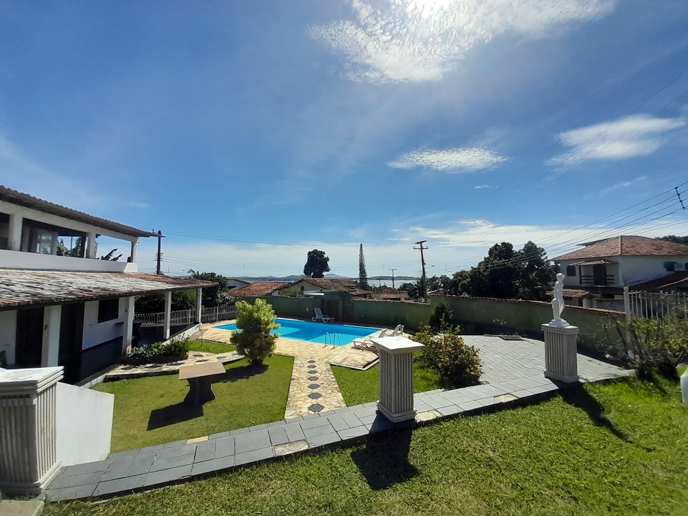
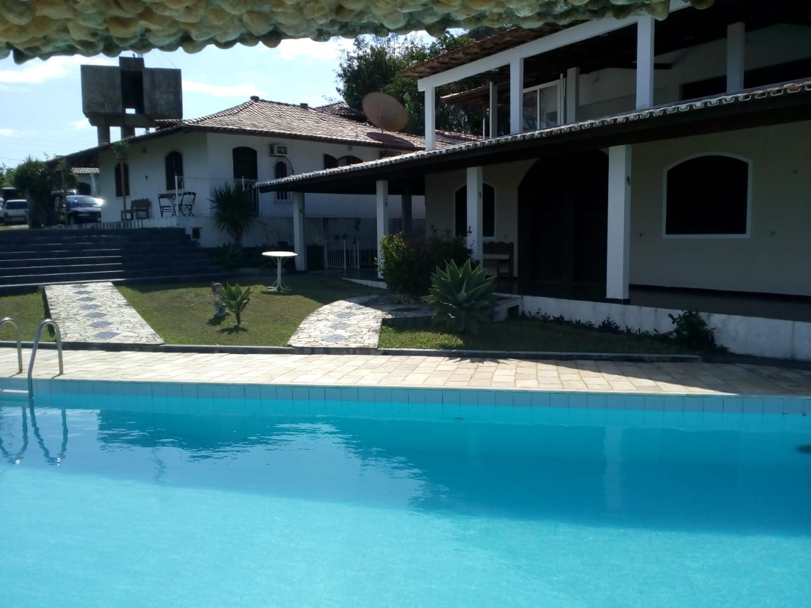

Sol e piscina
Piscina ao ar livre e espaços de jardim para aproveitar a estadia.


ARARUAMA · REGIÃO DOS LAGOS · RJ
Dias de sol, um mergulho na piscina e uma pausa na rotina. Conheça a Pousada Tourne Bride.
Conheça a pousada ↓SIMPLESMENTE, SINTA-SE BEM
Na Pousada Tourne Bride, em Araruama, a estadia combina quartos com banheiro privativo, jardim e piscina ao ar livre.
Um lugar para aproveitar o dia sem pressa e ter um cantinho para voltar depois de conhecer a cidade.
DO SEU JEITO, NO SEU RITMO
Entre um passeio e outro,
aproveite o que está por aqui.
Piscina ao ar livre e espaços de jardim para aproveitar a estadia.
Quartos com ar-condicionado, banheiro privativo e Wi-Fi gratuito.
A pousada oferece café da manhã continental. Consulte as condições da sua reserva.
Região dos Lagos
DIAS MAIS LEVES COMEÇAM AQUISEU PONTO DE PARTIDA
Reserve um tempo para conhecer a cidade, passear pela região e aproveitar seus dias de descanso.
Rua General San Martin, 111SUA PRÓXIMA PAUSA ESTÁ MAIS PERTO
Consulte datas, acomodações e valores para a sua viagem.
Disponibilidade e condições confirmadas diretamente com a pousada.